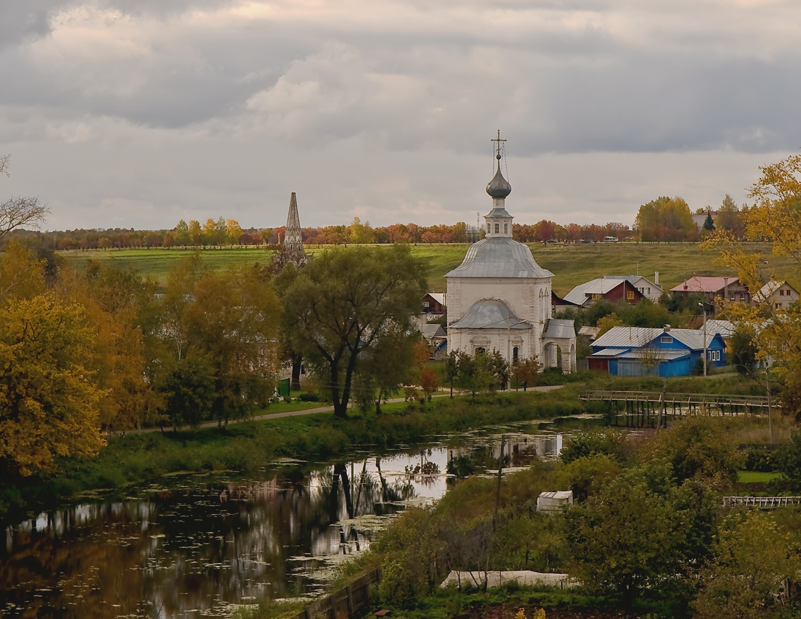

|
|
|  |
The information presented here will help you plan your independent trip through the historic cities of central and northwestern Russia. Each route is designed taking into account the rest and as much as possible covers the main attractions encountered along the way. Recommendations for overnight stays, stops, etc. are given. There are both complex routes (with heavy load) and simple introductory routes.
| Route | Moscow - Abramtsevo - Sergiev posad - Dmitrov - Klin - Volokolamsk - Istra - Zvenigorod - Mozhaisk - Borodinskoe field - Borovsk - Serpukhov - Kolomna - Yegoryevsk - Moscow |
| Difficulty | medium |
| Distance | 1100km |
| Duration | 5 days, 4 nights |
| Route | Vladimir - Pokrov - Kirzhach - Alexandrov - Yuryev-Polsky - Suzdal - Bogolyubovo - Mstera - Vyazniki - Gorokhovets - Murom - Gus-Khrustalny - Vladimir |
| Difficulty | medium |
| Distance | 900km |
| Duration | 5 days, 4 nights |
| Route | Ivanovo - Plyos - Vichuga - Kineshma - Yuryevets - Puchezh - Palekh - Shuya |
| Difficulty | easy |
| Distance | 500km |
| Duration | 3 days, 2 nights |
| Route | Yaroslavl - Tutaev - Rybinsk - Myshkin - Uglich - Kalyazin |
| Difficulty | easy |
| Distance | 260km |
| Duration | 4 days, 3 nights |
| Route | St. Petersburg - Shlisselburg - Staraya Ladoga - Tikhvin - Veliky Novgorod - Staraya Russa - Porkhov - Pskov - Izborsk - Pechory - Gdov - Kingisepp - Ivangorod - St. Petersburg |
| Difficulty | medium |
| Distance | 1500km |
| Duration | 6 days, 5 nights |